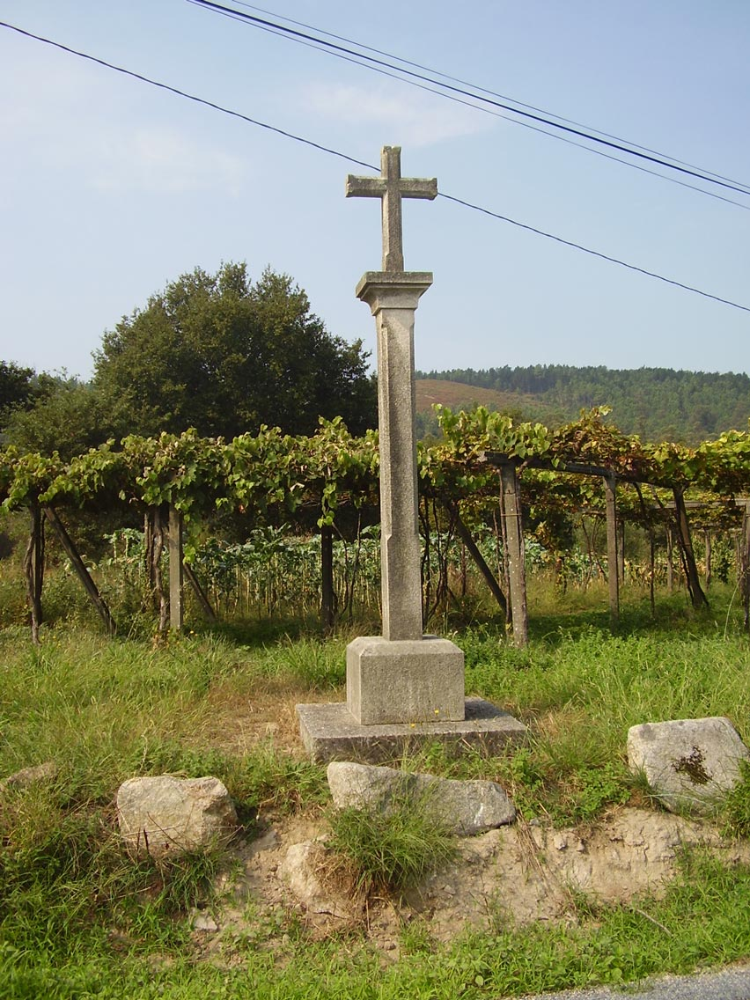

Pouco sabemos da etimoloxía de Dodro, que lle dá nome ó noso concello e a unha das súas parroquias, a de Santa María. Lestrobe e Dodro durante o Antigo Réxime foron couto redondo baixo a xurisdición do Marqués de Bendaña, que tiña pazo en Vigo. Torres del Río (2000) entende que Dodro e Dordo son diferentes grafías da mesma palabra. No Diccionario da Lingua Portuguesa de J. P. Machado, dordo procedería de DORSUM, 'cima', 'crista de montaña'. Co significado de auga hai a base hidronímica preindoeuropea DOR (Douro) e a raíz céltica DUBRO (Dubra, Dover), próximas foneticamente. Carlos Búa (2002) explica que Dodro podería proceder de – DORO, ‘lugar/praza cerrada’, en relación co FORO latino, a partir dun radical D'WER, ‘(en)cerrar’. Arriba da igrexa hai un Dodro pequeno, Dodriño, unha das aldeas da parroquia.
Con todas as reservas posibles, queremos aventurar aquí a hipó- tese de que quizais a expedición de Almanzor que arrasou Iria e Compostela no ano 997 non cruzou o río Ulla en Pontecesures, como sempre se pensou, senón en Catoira, pasando despois polas aldeas de Dodro. As traduccións do texto árabe Al Bayan al Mugrib, a fonte orixinaria, explican que despois de atravesaren o Uyla, “chegaron a planicies moi ben cultivadas e abundantemente abastecidas, entre outras as de Unba, de Qaryita e Deyr Sontebria. Chegaron así á ría de Ilya” (Sánchez Albornoz e outros). Iria está a un paso de Cesures e nun espazo tan reducido non terían sentido esas tres poboacións sobre as que non temos outra noticia histórica. Para salvar esa incongruencia hai quen entendeu (Fernández Rodríguez, 1967) que o referido río era o Umia, por máis que o nome parece aludir claramente ó Ulla. Non sería necesaria esa interpretación forzada se as amplas e feraces chairas das que se fala na crónica árabe foran estas ribeiras do Ulla, as da marxe dereita, onde se asentan lugares coma A Vacariza, que figura na Crónica de Santa María de Iria (acaso a Qaryita do códice, Karachita para outros traductores?), Bexo, Imo ou Laíño, sobre os que aportamos documentación desde o século XII.
Deyr Sontebria, que adoita traducirse coma Mosteiro de Santa María viría a ser o Mosteiro de Santa María de Dodro, pois non hai outra freguesía con esa advocación despois de pasado o río, antes de chegar a Iria. De seren certas as novas que vimos de expoñer, cobrarían entón sentido as lendas que permaneceron vivas durante séculos na memoria das xentes de Bexo sobre as andanzas do muslime Almanzor polos penedais do Castro e o mosteiro de Dodro Vello que Méndez Ferrín imaxinou na súa mesta cosmogonía pasaría a ser fito senlleiro da nosa historia. A afirmación de Madoz de que a igrexa de Dodro é de abadía con dereitos de tal e que en ningunha época se lle disputaron, podería aludir así a ese antigo edificio monacal e non ó de Conxo, do que dependeu despois.
Deixando a proposta anterior, no primeiro documento certo de Dodro do que sabemos, asinado polo arcebispo Xelmírez en 1114, Aldara Guteridiz dóalle a San Martiño Pinario a cuarta parte da igrexa de Santa María de Dalodro. En 1118, a raíña Urraca e o seu fillo Afonso VII confirman esa doazón. En 1136 Pedro, abade de San Martiño, afóralle “ad vitam” ó cóengo de Santiago Fernando Petriz a cuarta parte da Igrexa de Sta. María de Daodro, que lla dera súa nai ó mosteiro, coa condición de que ó final da súa vida a devolva, con outra parte que polo visto xa tiña o dito cóengo. Estes documentos están na Galicia Diplomática, no Arquivo Destruído do Real Mosteiro de San Martiño Pinario. Polo Censo de población de las provincias y partidos de la Corona de Castilla en el siglo XVI sabemos que había en Dodro nese tempo 70 habitantes e 120 en Laíño. Pouco depois, cando chegou aquí Jerónimo del Hoyo, visitador do arcebispo, en 1606, a parroquia tiña
«noventa feligreses de jurisdición del aguazil Ribera. Vale la fábrica seis ferrados y un toledano de centeno y cinco ferrados de mixo. ( ) Presentación de … Sancta María de Conjo que es un monasterio mercedario que hay en Santiago y llieba por ello el convento seis cargas de pan, como patrón.»
A festa grande de Dodro celébrase na honra do San Campio. Rosalía deixou entre as súas anotacións inéditas esta copla popular que aínda lles soa ás nosas xentes: Aquelas nenas de Dodro ben se poden alabar,/ teñen ó señor San Campio vestido de militar. O santo, que na Serra de Outes, onde se veneran as súas reliquias, protexe contra meigallos e posesións do maligno, entre nós é avogoso dos mozos en quintas.
